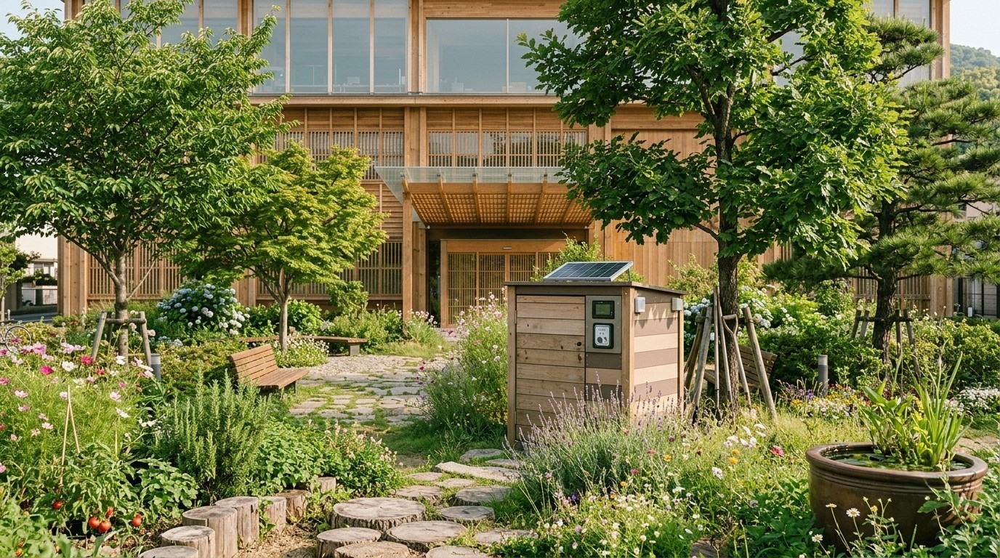
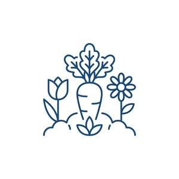
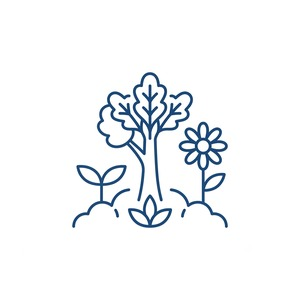
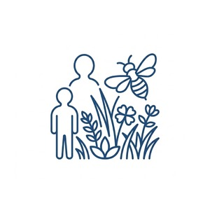
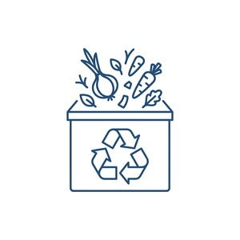
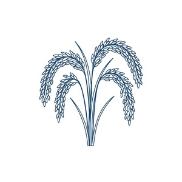
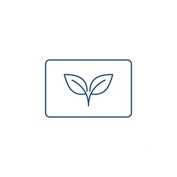
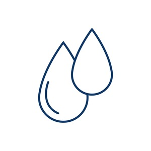

暮らしと循環推進課は、市民の暮らしの中にある小さな営み(庭づくり、調理くずなどの有機資源の循環、日々の記録など)が、 街全体の資源循環や環境づくりにつながっていくことを目指す部署です。大規模な環境事業だけでなく、 ベランダの鉢植えや家庭菜園、調理くずの循環といった身近な営みも、この街を支える大切な活動として位置づけています。
当課では、成果の大きさではなく、市民一人ひとりの暮らしが街とどのようにつながっているかを大切にしています。制度のご利用にあたって、他の方との比較や順位づけは行いません。
業務内容
- 市民庭づくり助成制度の運営
- ピコぬ市 緑化推進制度の運営
- 生き物共生型庭園認定制度の審査・認定
- ネオ堆肥ボックス事業の運営
- ぬか資源係の運営(ぬか資源を活用した土壌改良・環境循環事業の推進)
- Pioカードの発行・管理
- 雨水循環対策の推進
主な制度・事業のご案内
各制度の詳しい内容は、それぞれのご案内ページをご覧ください。

助成制度
市民庭づくり助成制度
多年草・在来植物の植栽や家庭菜園づくりなど、「育てる庭」を応援する助成制度です。

緑化
ピコぬ市 緑化推進制度
庭やベランダ、路地など身近な場所の緑化を支援する制度です。

認定制度
生き物共生型庭園認定制度
蝶や蜂が訪れる庭、季節の草花が残る庭など、生き物と共にある庭を市が認定する制度です。

循環事業
ネオ堆肥ボックス事業
調理くずなどの有機資源を地域資源として活用し、堆肥化・再利用を進める市民参加型事業です。

循環事業
ぬか資源係
精米時に発生する米ぬかを地域資源として活用し、土づくり、家庭利用、環境配慮型舗装研究など、街の循環につなげる取り組みです。

記録カード
Pioカード
市民一人ひとりの環境活動や資源循環への参加を記録するカードです。暮らしの小さな営みを、街の記録として残します。

水循環
雨水循環対策
雨水の貯留・再利用を進め、集中豪雨への備えや暑さ対策につなげる取り組みです。ネオ雨水貯水タンクの普及を進めています。
窓口のご案内
| 窓口 | 市役所2階 暮らしと循環推進課 |
|---|---|
| 受付時間 | 平日 8:30〜17:15 |
| 電話 | ぬぬ-ぬかピコ-2200 |